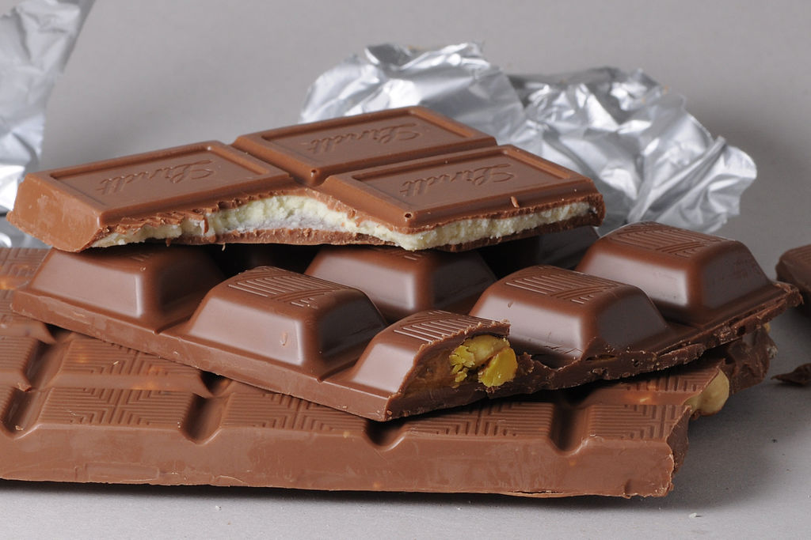

NOWOŚĆ!!!
Czy masz świąteczny humor? Jeżeli jeszcze nie, to możemy tobie pomóć znaleźć go! To jest bardzo prostę! Już mamy dostępne w sprzedaży świąteczne choinki! Specialnie dla ciebie przygotowaliśmy wyjątkowe czekoladowe smakołyki! Wybież swoje ulubione słodycze i my zrobimy dla ciebie twoją unikatową choinke! Ta edycja jest limitowana, dlatego pospiesz i zdąż złożyć swoje zamówienie!
Historia tworzenia Czekolady
Czekolada – wyrób cukierniczy sporządzany z miazgi kakaowej, tłuszczu kakaowego (masło kakaowe) lub innego tłuszczu roślinnego, środka słodzącego i innych dodatków, a w przypadku czekolady mlecznej także z mleka. Według dyrektywy 2000/36/WE czekoladę definiuje się jako wyrób otrzymywany z wyrobów kakaowych i cukrów, który zawiera nie mniej niż 35% suchej masy kakaowej ogółem, w tym nie mniej niż 14% suchej odtłuszczonej masy kakaowej. W celu uzyskania miazgi kakaowej i tłuszczu kakaowego, ziarna kakaowca poddaje się fermentacji, suszy i rozciera. Kolejnym etapem produkcji jest konszowanie.
Majowie i Aztekowie
Nasiona kakaowca właściwego początkowo były wykorzystywane przez Majów do produkcji napoju dla najbogatszych o nazwie Xococalit (z nahuatl xocolatl IPA [ʃoˈkola:t͡ɬ] – gorzka woda). Napój ten był również wykorzystywany podczas modłów i odpraw rytualnych. Xococalit był przyrządzany z roztartych ziaren kakaowca z miodem, chili bądź z kukurydzą. W celu uzyskania pianki przelewali napój z naczynia do naczynia.
Aztekowie rozdrabniali nasiona kakaowca by produkować zimny napój z kukurydzą, chili, miodem, wanilią oraz z suszonymi płatkami kwiatów nadających różną barwę napojom.
Europa (XVII w. – obecnie)
Dzięki odkryciu Ameryki przez Krzysztofa Kolumba nasiona kakaowca mogły zostać przewiezione do Europy. Nie zachwyciły jednak dworu hiszpańskiego, ponieważ Europejczycy nie wiedzieli jak je wykorzystać. Uwagę na nasiona kakaowca zwrócił Hernán Cortés, gdy w 1518 roku odkrył silos zawierający 100 milionów ziaren kakaowca, posortowanych w 40 tys. składowanych ładunków. Jednak dopiero w XVII wieku popularne stały się roztarte ziarna kakaowca, które zostały zalane ciepłą wodą z dodatkiem cukru.
W 1828 Casparus van Houten Senior opatentował metodę proszkowania nasion kakaowca a jego syn wynalazł proces alkalizowania czekolady zwany dutchingiem. Francis Fry z połączonego kakao, cukru i rozpuszczonego tłuszczu kakaowego wylanego do formy uzyskał pierwszą tabliczkę czekolady. Konszowanie czekolady zostało wynalezione przez Rudolphe’a Lindta.
Rodzaje czekolady
| Zdjęcie |
Rodzaj |
Opis |
|
Gorzka |
Składa się z masła kakaowego, proszku kakaowego i cukru, czasem z niewielką domieszką wanilii. Zawiera przynajmniej 70% produktów z miazgi kakaowej i powinna być przygotowywana w temperaturze 31,1–32,7 °C. Zawiera 2–5 razy więcej teobrominy niż mleczna. |
|
Deserowa |
W jej skład wchodzi miazga kakaowa, cukier, lecytyna oraz tłuszcz kakaowy lub inne dodatki. Najczęściej zawiera powyżej 50% produktów z miazgi kakaowej. |
|  |
Mleczna |
W jej skład wchodzi również mleko lub proszek mleczny i wanilia, a zawartość kakao nie przekracza 50%. Temperatura wytwarzania wynosi 28,9–30,5 °C. Zwykle czekolada ta zawiera nie mniej niż 25% suchej masy kakaowej ogółem, 14% suchej masy mlecznej, 2,5% suchej odtłuszczonej masy kakaowej, 3,5% tłuszczu mlecznego oraz 25% tłuszczu ogółem. |
|
Biała |
Powstała w 1930. Bez zawartości proszku kakaowego. W najlepszych czekoladach tego rodzaju jest tylko do 33% masła kakaowego. Temperatura wytwarzania 27,9–30,5 °C. |
 |
Różowa |
Zwana również czekoladą rubinową. Wynaleziona w 2017 po 13-letniej pracy, wprowadzona do sprzedaży w 2018. Powstała ze sproszkowanych nasion kakaowca rubinowego. Jej kolor jest naturalny, do produkcji nie używa się żadnych barwników oraz sztucznych aromatów. Charakteryzuje się orzeźwiającym, jagodowym smakiem oraz kremową, delikatniejszą konsystencją w porównaniu do pozostałych rodzajów czekolad. |